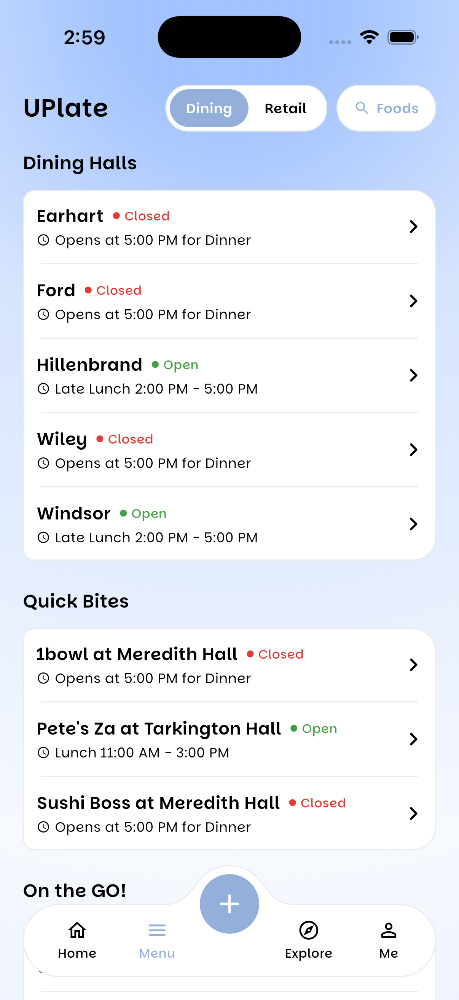
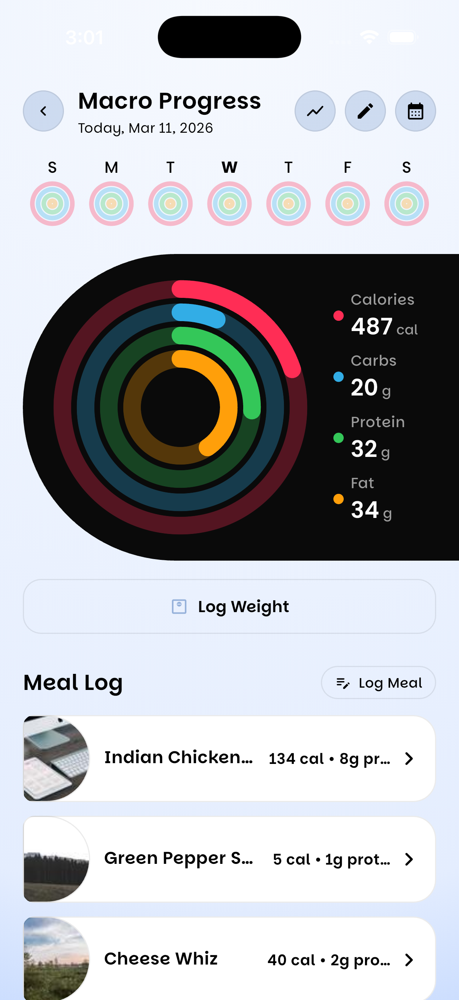
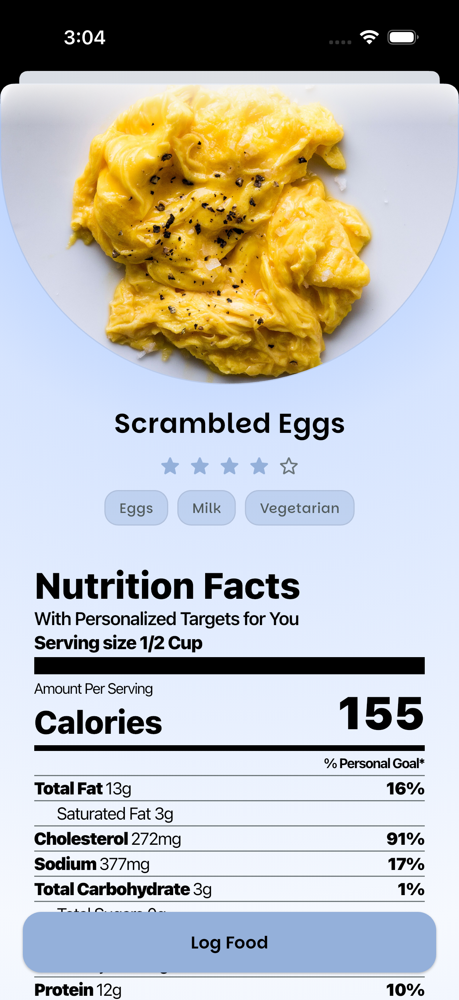
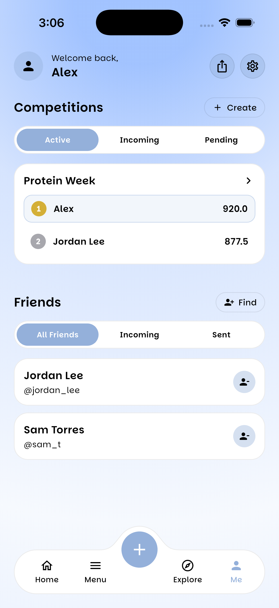
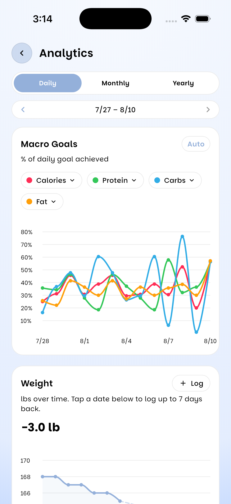

Eat better,
every day.
Know what you can eat, what helps you reach your goals, and log it in seconds: the free meal-prep buddy that filters your dining hall and restaurant menus for you.

Know what you can eat.
Filter every menu by allergy, diet style, and personal preference so you only see food that's safe and right for you.
Know what helps you reach your goals.
Get macro and calorie recommendations built around your goals and what's actually on the menu today.
Track it effortlessly.
Log meals in one tap straight from the menu, scan a barcode, or snap a photo, no manual entry.
Everything You Need
to Eat Smarter




Dining Hall & Restaurant Menus
View dining hall menus alongside local restaurants and popular chains, all in one place.
Personalized Recommendations
Filter menus by allergies, dietary preferences, and nutrition goals so you only see food that's right for you.
Macro Tracking
Log meals directly from menus, scan barcodes, or add custom foods to effortlessly track your nutrition.
Community Ratings & Photos
See real photos and ratings from other students before deciding what to eat.

What Makes UPlate Different
Know What You Can Eat
Filter by allergies, dietary style, and personal restrictions so you only ever see meals that are safe and right for you.
Know What Reaches Your Goals
Get macro recommendations personalized to your goals: building muscle, losing weight, or just eating better.
Track It Effortlessly
Log meals in one tap straight from the menu, scan a barcode, or add a custom food, no manual entry.
Built for Campus Dining
Unlike general trackers that need manual food entry, UPlate integrates directly with your dining hall and campus restaurants.
How It Works
Select Your School
Find your school and get instant access to real-time dining hall menus sourced directly from campus dining services.
Set Your Preferences
Tell us your allergies, dietary style, and health goals: from building muscle to eating gluten-free.
Get Personalized Targets
Receive macro and calorie recommendations built around your goals and what's actually on the menu.
Browse Filtered Menus
Every dining hall and restaurant menu is already filtered to show only what fits you, no more scanning ingredient lists.
Log Meals in One Tap
Add meals straight from the menu, scan a barcode, or snap a photo, no manual entry required.
Track Your Progress
Watch your macros add up over time, right alongside the meals that got you there.
What Students Are Saying
I hit my bench PR because I finally started eating enough.
- Weightlifter
UPlate made cutting for my bodybuilding competition so much easier.
- Bodybuilder
I didn't even realize my dining hall had gluten-free options until I used UPlate.
- Student with a gluten sensitivity
As someone with food allergies, UPlate makes it easy to know what's safe to eat.
- Student with food allergies
Eating healthier is easier together.
UPlate Social turns your dining hall trips into something you actually look forward to: compete with friends in macro challenges, share your favorite meals, and see what your friends are actually eating, not a stock photo of it.

College life isn't limited to campus dining.
UPlate also includes menus from local restaurants and popular chains, making it easy to stay on track wherever you eat.
Take your nutrition to the next level.
- AI meal recommendations
- Log meals with a photo
- 7-day meal planning
- Advanced analytics & progress tracking
- Weight tracking

Frequently Asked
Still have questions?
Find Us HereReady to transform your campus dining?
Join thousands of students eating smarter.